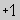
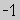
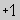
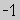

Creating Molecules
When JChemPaint has been startet, you automatically get an empty document. In order to paint
a structure the typical steps would be the following:
- Often it is the best to start with rings. Using the ring templates in the button bar (click on a button
and then in the document) you can build the ring structures of the molecule. You can dock a ring to another ring by clicking
on an existing ring (the docking atoms will be highlighted). If the molecule has no rings, go to the next step.
- The next step are typically the chains. Choose the
 button, click on the atom where the chain starts and then on the
last atom of the chain to enlarge it.
button, click on the atom where the chain starts and then on the
last atom of the chain to enlarge it.
- After this, you can add double/triple bonds by using again and clicking on the bonds to make double or triple. You can use
 and to make existing bonds wedge bonds or you can draw wedge bonds directly by clicking
on an existing bond.
and to make existing bonds wedge bonds or you can draw wedge bonds directly by clicking
on an existing bond.
- Finally the atoms need to be set. Either use one of the symbol buttons and click on an atom to change it to this symbol. You can also use the periodic table
to choose an element. Finally with
 you can go through some common elements by clicking on an atom repeatedly. With
 and  you can change the charge.
you can go through some common elements by clicking on an atom repeatedly. With
 and  you can change the charge.
Obviously the mentioned steps are only a suggestion. You can do them in any order. Many functions are also available in conext menus by right clicking on an atom or bond.